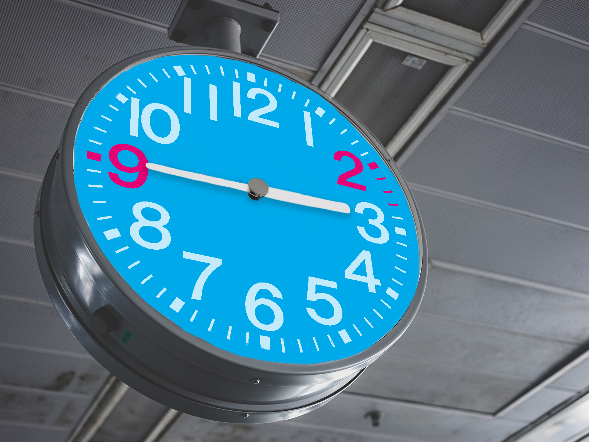
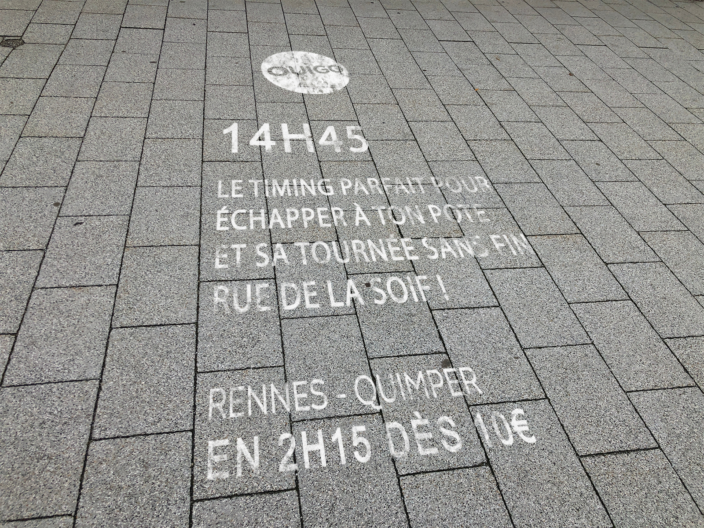
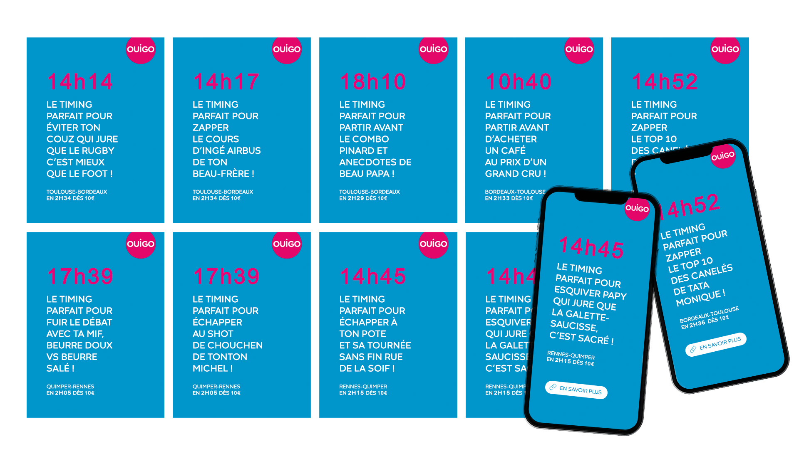
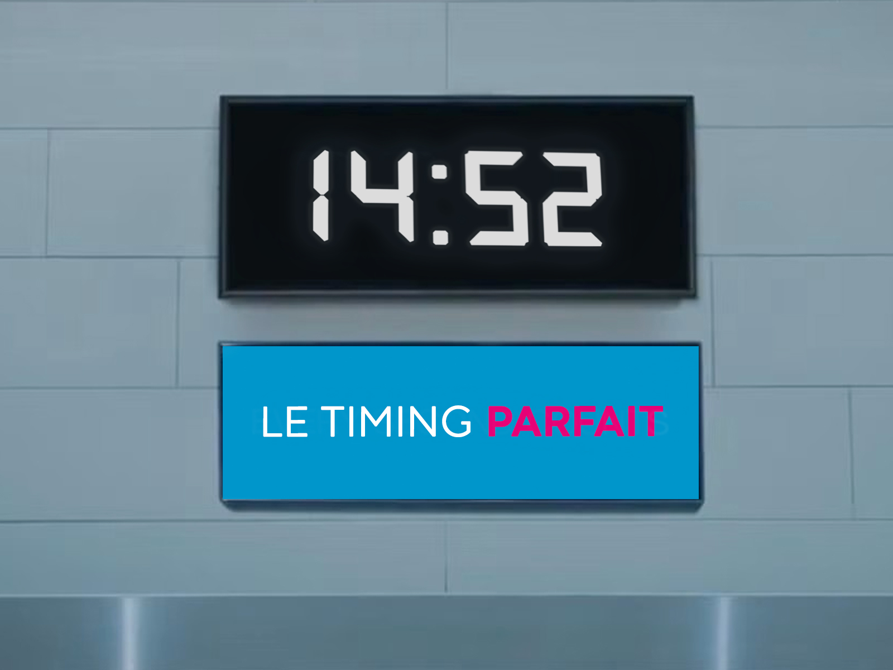
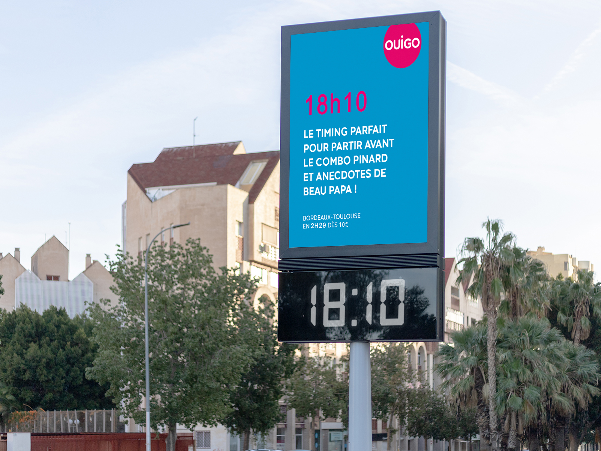
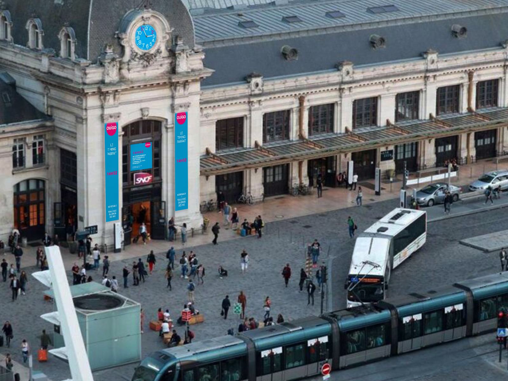
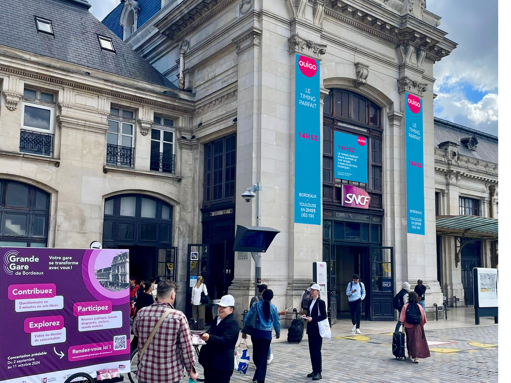

Projects > Perfect Timing
Perfect Timing
Recommendation for Ouigo · Award-Winning Campaign

Context & Objectives
OUIGO gave us a clear brief: how to make end-of-line destinations more attractive to travelers (young
people and families), in the face of competition from individual modes of transport such as cars,
carpooling or planes?
While the train is an obvious alternative for longer journeys, it suffers from a perception of being
less flexible and convenient, especially for 100 to 300 km trips, which are the most frequently
traveled by the French.
A study showed that 75% of non-train users choose other modes of transport, even when the train
could be a viable option. Why? The price, convenience (schedules, connections, punctuality, etc.).

Strategy & Insight
One of the key levers we identified was the schedule.
Travelers often express a need for more flexibility: “I want to leave whenever I want, at a time
that suits me” or “The times don’t work for me.” These concerns have led many of them to choose more
flexible modes of transport.
We noticed that young people aged 18 to 34 are more likely to adapt to fixed schedules, unlike those
over 50, who see these schedules as inconvenient. It’s this perceived flexibility in other transport
modes that often leads them to choose alternatives, even if those are more expensive and more
polluting — two factors that matter a lot to our younger target.
Our challenge was to show these young people that OUIGO’s fixed schedules are not just a strength,
but also fit their lifestyle.
Creative Solution
To change the perception of fixed schedules as a constraint, we flipped the idea and turned it into a
strategic advantage. Instead of seeing schedules as a limitation, we presented them as a smart,
practical choice.
A non-refundable, non-exchangeable ticket becomes the perfect excuse to avoid awkward social
situations (like a never-ending family lunch or a friend who won’t leave your place), while still
traveling at a great price.
Concrete example: Sunday at 2:52 PM? You’re already on your OUIGO, while others are still stuck at
an endless family meal. Thursday at 2:39 PM? While your friend is begging you to grab a drink,
you’re already in your train seat, relaxed, ignoring the desperate texts.

One of the main advantages of fixed schedules is their simplicity. One time per day is easier to
remember, making it a strategic asset for our audience. So we highlighted this simplicity and
memorability, showing that these times are not just convenient, but also smart.
To convey this message, we created short, punchy, humorous, and quirky content for digital platforms
like TikTok, Reels, and Instagram Stories — perfect for grabbing the attention of our target
audience.
But we didn’t stop there. We also hacked the system by making these schedules impossible to ignore.
We changed public clocks — in train stations and on city squares — to display OUIGO times, making
them visible and omnipresent. We added sidewalk tags directly on the pavement so every young person
in the city knows when the OUIGO train leaves. It was no longer just a time on a ticket, but a
moment that everyone knew and remembered.
The best part? This campaign can be adapted to every end-of-line city. The goal is to shift
perceptions about fixed schedules and make OUIGO the go-to choice for young travelers looking for a
practical and affordable alternative.





Team
Léa SALAÜN, Maëlle Marcuzzi, Inès Pontiggia, Antoine Colin, Capucine Delaplace, Tiphaine Jeannot
Sources
The French and the train: their expectations, their choices, and their critiques:
View the article on the IFOP website
Download the study PDF